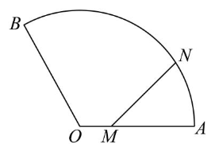

题目来源：菁师帮试卷 190953
本文仅整理题目，不含答案与解析。
本文共整理 36 道题，包括 7 道单选题、5 道填空题和 24 道解答题。
单选题
1.
(2025 北京第五十五中学高三上期中)已知函数 在 处取到最小值,且在区间 上存在极大值, 的最小整数解是( )
A. 2
B. 8
C. 10
D. 14
解答:
由极小值点为:
然后考虑极大值点在区间上的存在性:
\frac\pi6\omega+\frac\pi6\gt\frac\pi2\\ \omega\gt2\\ k=-1,\omega_\min=8
正确答案:B
2.
(2025 北京顺义牛栏山第一中学高三上期中) 已知函数 ，则下列结论中正确结论的个数为（ ）
① 存在正数 ，使 在定义域内单调递减；
② 当 时，函数 有唯一零点；
③ 若 存在两个零点 ，且 ，则 。
A. 0
B. 1
C. 2
D. 3
对于①,取,则:
对于②,我们结合图像,做出左右切线:
仅有这一个交点
对于③,不妨设易知,分类:
正确答案:D
3.
(2025 北京第一六六中学高三上期中)已知函数和在实数集上的图象均为一条连续不断的曲线,且满足:,都有. 命题:若函数在实数集上单调递增,则函数不是减函数; 命题:若函数在实数集上无最大值,则函数无最大值. 则下列判断正确的是( )
A. 和都是真命题
B. 和都是假命题
C. 是真命题,是假命题
D. 是假命题,是真命题
对于命题,不严谨的证明是:
这样可以不完备地说明不减.
注意,可导函数一定连续,连续函数不一定可导. 以上的证明方法默认了均可导.
严谨的书写如下:
对于命题,可以构造反例:
显然这样的构造符合题干要求,推翻了命题.
正确答案:C
4.
(2025 北京朝阳高三上期中)若函数 在区间 上是单调函数,则实数 的取值范围是( )
A.
B.
C.
D.
要求导函数无变号零点:
正确答案:A
5.
(2025 北京第五中学高三上期中)下列函数中,在其定义域内既是奇函数,又是减函数的是( )
A.
B.
C.
D.
正确答案:C
6.
(2025 北京汇文中学高三上期中)对于函数 ,若存在实数 ,使 ,其中 ,则称 为“可移 倒数函数”, 为“ 的可移 倒数点”. 设 ,若函数 恰有 3 个“可移 1 倒数点”,则 的取值范围( )
A.
B.
C.
D.
函数 恰有 3 个“可移 1 倒数点”,等价于恰有三个零点,下面按照"易中天"的顺序思考:
我们接下来为的三个零点划定归属:
对于,对应图像中与相切,即,切点,与矛盾
对应,对应图像中,接下来考虑二次函数零点个数的约束:
对于,有:
对于,有:
综上,有:
正确答案:A
更正（Claude 补充）
本节由 Claude（Anthropic 开发的 AI 模型）补充，附在作者解答之后，并非原作者所写。
答案 A 正确，但零点的归属和判别式需要更正。
- 二次方程 的判别式是 ，不是 。令 ，方程即 ，，两根为 。两根都小于 当且仅当较大根 ，即 。
- 在 上， 满足 ，严格递减，所以 在 内至多一个根；有根当且仅当 ，即 。
所以三个零点只能是“两个在 、一个在 ”，也就是文中第一种情形 ，而不是第二种。条件为 且 ，即 。例如 时三个零点约为 （我已数值核对）。
7.
(2025 北京第一七一中学高三上期中)已知 ,,其中 是常数,则( )
A. 存在实数 ,使得对任意实数 ,函数 都有零点
B. 存在实数 ,使得对任意实数 ,函数 至少有 2 个零点
C. 对于任意实数 ,存在实数 ,使得函数 恰有 2 个零点
D. 对于任意实数 ,存在实数 ,使得函数 恰有 3 个零点
对的符号进行分类,可以确定抛物线的开口方向和单调性,或退化情况:
此时,我们可以知难而退,时顶点处函数值与的大小关系还会影响分类,这样过于复杂. 我们直接从选项入手.
A:要使对于任意实数m,都有零点,要求值域为,这表明,否则.
若,则有最小值,取足够小的就可以让. 所以A不正确
B:取,可以使得在上恰有两个零点,符合B. B正确
C:取,根据二次函数的图像,有且仅有一个零点,所以C不正确.
D:取一个极特殊的,使得抛物线顶点处函数值等于,即可让可能的零点数目为,D不正确.
正确答案:B
填空题
8.
(2025 北京顺义第一中学高三上期中)已知函数 ,若 为单调递增函数,则实数 的范围为,若 恒成立,则实数 的范围。
综上,
对于第二个空,如果,不符合题意.
如果,有.
综上,
9.
(2025 北京海淀高三上期中) 某社区内有一扇形草坪如图，扇形的半径 为 60 米，。甲从圆心 出发，沿 以每秒 1 米的速度向 慢走；同时乙从 出发，沿 以每秒 米的速度向 慢跑。经过 秒，甲、乙所在位置分别为 ，记 的长度为 米。给出下列四个结论：

① 当 时，；
② 函数 在区间 上单调递增；
③ 方程 在区间 上恰有一个根；
④ 若函数 在 处取得最小值，则 。
其中所有正确结论的序号是______。
①:
②:
在中使用余弦定理:
事实上,从几何直观上看,,的横纵间距都在增大.
但是代数法自有强大之处:对于,我们同样可以得到的单调性. 但是由于纵坐标在上单减,难以继续沿用几何法. ③:
沿用②的拓展结论,,那么:
④:
那么,只需要考虑,在这个闭区间里,最小值要么出自于端点,要么出自于内部的极小值点.
所以,
正确答案:①②④
反思:返璞归真的代数法,反而快于几何法,因为减少了不同方法的切换overhead.
10.
(2025 北京东直门中学高三上期中) 写出一个满足条件①②③的函数 ______。
① 的定义域为 ；
② 的值域为 ；
③ 为 的极值点。
例:
更正（Claude 补充）
本节由 Claude（Anthropic 开发的 AI 模型）补充，附在作者解答之后，并非原作者所写。
这个例子的值域是 ： 取不到 ，不满足条件②。可以改为 ：定义域为 ，值域为 ，且 是极小值点。像 这样的有理函数取不到 ，所以三角函数更方便。
11.
(2025 北京第一零一中学高三上期中) 已知函数 ，给出下列四个结论：
① 函数 的图象关于原点中心对称；
② 存在 ，使得 ；
③ 函数 的图象与函数 的图象没有公共点；
④ 函数 的极值点个数为 3。
其中所有正确结论的序号是______。
①:显然,错误
②:,由零点存在性定理,正确
③:
这将与三角函数的有界性矛盾,故无公共点
④:
显然,为奇函数,则的零点关于对称.
根据零点存在性定理,必然存在无数个
正确答案:②③
12.
(2025 北京育才学校高三上期中) 已知函数 ，给出下列四个结论：
① 当 时，对任意 ， 有 1 个极值点；
② 当 时，存在 ，使得 存在极值点；
③ 当 时，对任意 ， 有一个零点；
④ 当 时，存在 ，使得 有 3 个零点。
其中所有正确结论的序号是______。
①:,显然是唯一的极值点
②:
则②错误,因为使得单调递减
③:
取,,无零点
④:
通过选取较小的,可以让出现不单调的情况,这否定不了④.
我们使用一元三次方程有三个不同实根的充要条件:
④的结论与完整答案（Claude 补充）
本节由 Claude（Anthropic 开发的 AI 模型）补充，附在作者解答之后，并非原作者所写。
④ 是正确的。取 且 足够小，考察 ：
- 时 （首项 ，）；
- ；
- 取 ，则 时 ；由连续性， 足够小时仍有 ；
- 时 。
变号三次，恰有三个零点（三次多项式至多三个）。几何上，就是把水平线 轻微向右下倾斜：左侧仍交一次，右侧曲线衰减到 ，直线在很远处才降到 以下，于是又多交一次。例如 时三个零点约为 （已数值核对）。
结合作者对①②③的判断（①对，②③错），本题答案为 ①④。
解答题
13.
(2025 北京第五十五中学高三上期中)已知函数 .
(1)当时,求曲线在点处的切线方程;
(2)讨论函数在区间上的极值点的个数;
(3)若函数在区间上有唯一零点,证明:.
14.
(2025北京顺义牛栏山第一中学高三上期中)已知函数在处的切线为.
(1)求;
(2)证明:函数有最小值.
15.
(2025北京汇文中学高三上期中)已知函数
(1)求曲线在点处的切线方程；
(2)设函数 .
(i) 求 的单调区间;
(ii) 判断 的零点个数,并说明理由;
(3)若存在 条互相平行的直线与曲线 相切,写出 的最大值(只需写出结论)
16.
(2025 北京北师大附中高三上期中)已知函数 ().
(1)若 ,求函数 的单调区间;
(2)若函数 在区间 和 上各恰有一个零点,分别记为 和 ,
(i) 证明:函数 在两点 , 处的切线平行;
(ii) 记曲线 在点 处的切线与两坐标轴围成的三角形面积为 ，求 的最大值。
17.
(2025 北京北师大附中高三上期中)已知函数 ().
(1)求曲线 在点 处的切线方程;
(2)求 的极小值点;
(3)当 时,若对任意 , 恒成立,记此时实数 的最大值为 ,求 的解析式.
18.
(2025 北京第八中学高三上期中)已知函数 .
(1)若 ,求 的零点;
(2)若 ,讨论 的单调性;
(3)若 , 为自然对数的底数,证明:.
19.
(2025 北京顺义第一中学高三上期中)函数 的定义域为 ,, 的导函数 , 为 处的切线.
(1) 的最小值;
(2) ,除点 外,曲线 均在 上方;
(3) 若 时,直线 过 且与 垂直,, 分别于 轴的交点为 与 ,求 的取值范围.
20.
(2025 北京通州高三上期中)已知函数 的定义域为 ,其导函数 .
(1)当 时,求 的单调区间;
(2)若 ,求证:函数 的图象恒在函数 的图象的上方;
(3)若 为 的极大值点,求实数 的取值范围.
21.
(2025 北京通州高三上期中)已知函数 有三个零点记为 ,其中 和 .
(1)求实数 的取值范围;
(2)记曲线 在点 处的切线为 ,设直线 与 轴交点的坐标为 ,求 的范围.
22.
(2025 北京通州高三上期中)设函数 ,且 .
(1)求 的值;
(2)已知 在区间 上单调递减,再从条件1、条件2、条件3这三个条件中选择一个作为已知,使函数 存在,求 在区间 上的取值范围.
条件①：;
条件②： 是 的一个极值点;
条件③： 的图象关于点 对称;
注：如果选择的条件不符合要求,第(2)问得0分,如果选择多个符合要求的条件分别解答,按第一个解答计分.
23.
(2025 北京第一六六中学高三上期中)已知函数 ,.
(1)当 时,求曲线 在 处的切线方程;
(2)当 时,
① 证明：函数 在区间 内存在唯一的极值点；
② 记 在区间 内的极值点为 ，设函数 ，，讨论函数 的单调性。
24.
(2025 北京朝阳高三上期中)已知函数 .
(1)求 在区间 上的最大值;
(2)若函数 ,求证: 在区间 上有且只有一个极大值点;
(3)若 ,写出 的取值范围.(只需写出结论)
25.
(2025 北京朝阳高三上期中)已知函数 .
(1)当 时,求曲线 在点 处的切线方程;
(2)讨论函数 的单调性.
26.
(2025 北京海淀高三上期中)已知函数 有两个极值点 . 记 , .
(1)若点在直线上,求的值;
(2)若函数的图象上存在点,使得是以为顶点的等腰三角形,求的取值范围.
27.
(2025 北京海淀高三上期中)已知函数,再从条件1、条件2、条件3这三个条件中选择一个作为已知,使得唯一确定,求:
(1)曲线在点处的切线方程;
(2)函数的单调区间.
条件①：;
条件②：;
条件3：。
注：如果选择的条件不符合要求，本题得 0 分；如果选择多个符合要求的条件分别解答，按第一个解答计分。
28.
(2025 北京东直门中学高三上期中)已知函数 ,.
(1)当 时,求 的单调区间;
(2)已知 有两个极值点 ,,且 ,
(i)求实数 的取值范围;
(ii)求 的最小值.
29.
(2025 北京育才学校高三上期中)已知函数 .
(1)求函数 的图象在点 处的切线 的方程;
(2)当 时,求证:;
(3)讨论函数 ( 且为常数)零点的个数.
30.
(24-25 高三上·北京高三上期中)已知函数 在 处有极值-1.
(1)求实数 , 的值;
(2)求函数 的单调区间.
31.
(2025 北京第一七一中学高三上期中)已知函数 .
(1)求曲线 在点 处的切线方程;
(2)求 的单调区间;
(3)若关于 的方程 有两个不相等的实数根,记较小的实数根为 ,求证:。
32.
(2025 北京第四中学高三上期中)已知函数 。
(1)若 ,求 的极值;
(2)若 ,求 的最大值。
33.
(2025 北京第一六一中学高三上期中)已知函数 。
(1)当 时,求证:
① 当 时，；
② 函数 有唯一极值点；
(2) 若曲线 与曲线 在某公共点处的切线重合，则称该切线为 和 的“优切线”。若曲线 与曲线 存在两条互相垂直的“优切线”，求 的值。
34.
(2025 北京西城外国语学校高三上期中)设 ,函数 .
(1)当 时,求曲线 在点 处的切线方程;
(2)求 的单调区间;
(3)若函数 有两个相异零点 ,,求证:.
35.
(2025 北京第十四中学高三上期中)已知函数 .
(1)当 时,
(i) 求曲线 在点 处的切线方程;
(ii) 求证:,.
(2)若 在 上恰有一个极值点,求 的取值范围.
36.
(2025 北京昌平第一中学高三上期中)已知函数 ().
(1)当 时,求曲线 在点 处的切线方程;
(2)求 的单调区间;
(3)若 恰有两个零点,求实数 的取值范围.
正在加载评论…